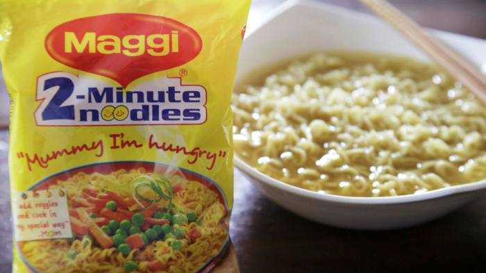

Places I have visited

kullu-Manali
I had visited Manali in NOV 2 2017
Manali is a resort and tourist town in the mountains of Himachal Pradesh, India. It is situated in the northern end of the Kullu Valley, formed by the Beas River. The town is located in the Kullu district, approximately 270 kilometres (170 mi) north of the state capital of Shimla and 544 kilometres (338 mi) northeast of the national capital of Delhi. With a population of 8,096 people recorded in the 2011 Indian census, Manali is the beginning of an ancient trade route through the Union territory of Ladakh, over the Karakoram Pass and onto Yarkand and Hotan in the Tarim Basin of China. Manali is a popular tourist destination in India and serves as the gateway to the Lahaul and Spiti district as well as the city of Leh in Ladakh.
Mt.ABU
I had visited Mt.Abu in FEB 7 2012
Mount Abu is a hill station in the Aravalli Range in Pindwara - Abu Assembly Constituency Of Sirohi district of Rajasthan state in western India, near the border with Gujarat. The mountain forms a rocky plateau 22 km long by 9 km wide. The highest peak on the mountain is Guru Shikhar at 1,722 m (5,650 ft) above sea level. It is referred to as 'an oasis in the desert' as its heights are home to rivers, lakes, waterfalls and evergreen forests. The nearest train station is Abu Road railway station: 28 km away.It is als known as the Shimla of Rajasthan
Puri
I had visited Puri in NOV 24 2013
Puri is a coastal city and a municipality in the state of Odisha in eastern India. It is the district headquarters of Puri district and is situated on the Bay of Bengal, 60 kilometres (37 mi) south of the state capital of Bhubaneswar. It is also known as Sri Jagannatha Dhama after the 12th-century Jagannath Temple located in the city. It is one of the original Char Dham pilgrimage sites for Hindus.
review on the movies

“Avengers: Endgame” is the culmination of a decade of blockbuster filmmaking
“Avengers: Endgame” is the culmination of a decade of blockbuster filmmaking, the result of years of work from thousands of people. It is designed to be the most blockbuster of all the blockbusters, a movie with a dozen subplots colliding, and familiar faces from over 20 other movies. It’s really like nothing that Hollywood has produced before, existing not just to acknowledge or exploit the fans of this series, but to reward their love, patience, and undying adoration. The blunt thing you probably want to know most: It’s hard to see serious MCU fans walking away from this disappointed. It checks all the boxes, even ticking off a few ones that fans won’t expect to be on the list. It’s a satisfying end to a chapter of blockbuster history that will be hard to top for pure spectacle. In terms of sheer entertainment value, it’s on the higher end of the MCU, a film that elevates its most iconic heroes to the legendary status they deserve and provides a few legitimate thrills along the way.

It may be a long time before viewers can appreciate the 2019 remake of "The Lion King" as a freestanding work, instead of judging it against the original.
It may be a long time before viewers can appreciate the 2019 remake of "The Lion King" as a freestanding work, instead of judging it against the original. The 1994 version was "Hamlet" plus "Bambi" on the African veldt: a childhood-shaping, Oscar-winning blockbuster, the second-highest grossing feature film of its calendar year, one of the last great hand-drawn Disney animated features (Pixar's original "Toy Story" came out 18 months later), and a tear-producing machine. This remake was controversial long before it opened, mainly because it seemed to take the Walt Disney company's new branding strategy—remaking beloved animated films as CGI-dependent "live action" spectaculars—to its most drastic conclusion. It serves up the same story with different actors, different arrangements of beloved songs and soundtrack cues, a couple of original tunes, a few fresh scenes and sequences, and, of course, photorealistic animals. The latter are the movie's main selling point, so believable that one of my kids remarked afterward that sitting through the film was like watching a nature documentary on mute while the soundtrack to original "The Lion King" played in the background.
When Steve Rogers’ Captain America passed the shield to Sam Wilson’s Falcon at the end of “Avengers: Endgame,” it marked the start of a new era for the star-spangled symbol.
When Steve Rogers’ Captain America passed the shield to Sam Wilson’s Falcon at the end of “Avengers: Endgame,” it marked the start of a new era for the star-spangled symbol. “The Falcon and the Winter Soldier” follows Sam Wilson (Anthony Mackie) struggling to take up the mantle of Captain America. Along for the ride is Bucky (Sebastian Stan), who is going through his own issues from his past life as the brainwashed assassin known as the Winter Soldier. Together, the two battle a radicalized group of super soldiers known as the Flag Smashers, the new-faux Captain America John Walker (Wyatt Russell) and Zemo (Daniel Bruhl), the methodical villain who tore the Avengers apart in “Captain America: Civil War.” Sharon Carter (Emily VanCamp) returns as the former S.H.I.E.L.D. and CIA agent hiding in exile as the mysterious Power Broker. Oh, and Julia Louis-Dreyfuss makes an appearance here. There is a lot happening in this show. For the most part, the show works. Certain elements get more room to breathe here. That is the benefit of this being a six-episode series on Disney+ as opposed to a two-hour theatrical film. The strongest element is something that the show could not afford to mess up: the story of Sam taking up the shield. He is constantly thrown into one situation after another that he has to navigate, and every time he proves why Steve chose him. It goes back to what 2011’s “Captain America: The First Avenger” established: the idea of Captain America not just being the perfect soldier, but also a good man. Sam is a good man and it shows through his ability to handle situations humanely and fight against injustice. When he first flew into battle with the shield, I was cheering from my couch.
news about environment
-
Climate change: Amazon regions emit more carbon than they absorb
Significant parts of the world's largest tropical forest have started to emit more CO2 than they absorb. The south-east is worst-affected, say scientists, with higher rates of tree loss and an increasing number of fires. Temperatures there have risen by three times the global average during the hottest months.Areas of our planet that absorb more carbon from the atmosphere - for example, in the form of the greenhouse gas CO2 - than they store are known as sinks. The role played by the lands and forests of the Earth in soaking up carbon has been a critical factor in preventing faster rates of climate change. Since the 1960s, these sinks have taken in around 25% of carbon emissions from the use of fossil fuels. The Amazon, home to the world's largest tropical forest, has played a key role in absorbing and storing much of that carbon. But the growing impacts of climate change and deforestation are taking their toll on this crucial CO2 sponge.
-
Nestle document says majority of its food portfolio is unhealthy
Nestlé’s, which makes Maggi noodles, KitKats and Nescafe, in an internal document admitted that more than 70% of its food and drinks portfolio do not meet the “recognised definition of health”. The world’s biggest food company also admitted that some of its food products will ‘never be healthy’ no matter “how much we renovate”. According to UK business daily Financial Times, a presentation circulated among top executives in early 2021 said that only 37% of Nestle’s products, excluding pet food and specialised medical nutrition, achieved a rating of 3.5 or higher under Australia’s health star rating system. The company considered 3.5-star rating as the “recognised definition of health”. The system rates foods on a scale of 5 stars and is used by international groups as the benchmark.
books

Charlie And The Chocolate Factory
Charlie And The Chocolate Factory
Charlie and the Chocolate Factory was first published in the United States by Alfred A. Knopf, Inc. in 1964 and in the United Kingdom by George Allen Unwin 11 months later. The book has been adapted into two major motion pictures: Willy Wonka the Chocolate Factory in 1971, and Charlie and the Chocolate Factory in 2005. The book's sequel, Charlie and the Great Glass Elevator, was written by Roald Dahl in 1971 and published in 1972. Dahl had also planned to write a third book in the series but never finished it.
Best Buy Link

Harry Porter And The Philosopher's Stone
Harry Porter And The Philosopher's Stone
The book was first published in the United Kingdom on 26 June 1997 by Bloomsbury. It was published in the United States the following year by Scholastic Corporation under the title Harry Potter and the Sorcerer's Stone. It won most of the British book awards that were judged by children and other awards in the US. The book reached the top of the New York Times list of best-selling fiction in August 1999 and stayed near the top of that list for much of 1999 and 2000. It has been translated into at least 73 other languages, and has been made into a feature-length film of the same name, as have all six of its sequels. The novel has sold in excess of 120 million copies, making it the best-selling book of all time.
Best Buy Link
.jpg)